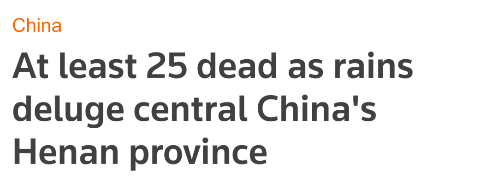
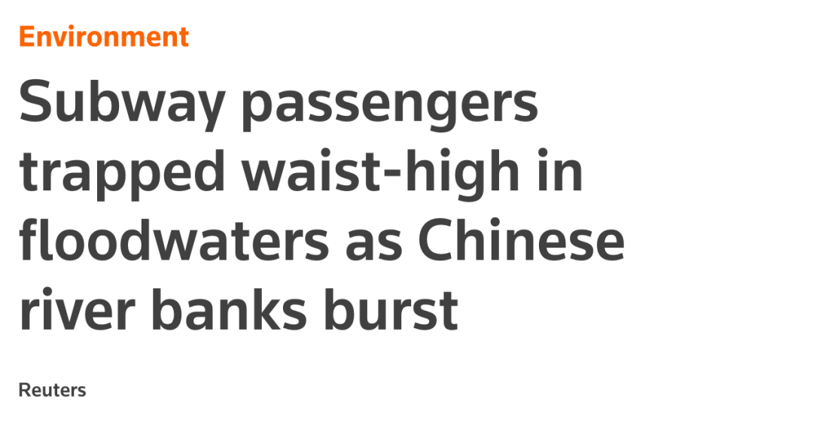
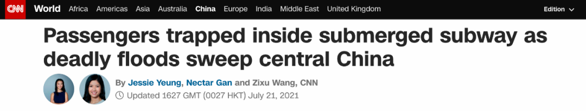
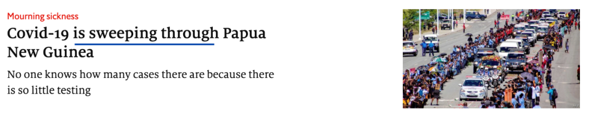

河南暴雨，外媒用了这些词！
写在前面
连续3天失眠到凌晨3点了，看着河南暴雨互助超话里铺天盖地的求救信息，揪心得睡不着觉。人类在大自然面前实在太渺小，太无力了。但暴雨中彼此扶持、互相救助的同胞们又让人感受到无穷的力量。相信我们的国家和人民，一定会度过难关！
这场罕见的大暴雨，多家外媒都进行了报道。我们汇总了多家媒体的文章，带大家一起来学习。
转自“独霸上海的妖怪”
外媒标题
我们先来看几则外媒的标题。第一则来自路透社：

At least 25 dead as rains deluge central China’s Henan province 中国中部河南省暴雨成灾，致至少25人死亡- 我们重点来看deluge这个词：
deluge [ˈdeljuːdʒ] 作名词指「洪水」，作动词指「泛滥；淹没」。deluge+地点便表示某地遭遇洪灾。
还有的媒体用的是flood +地点，inundate sth+地点，swamp+地点，都表示「某地遭遇洪灾」。 - deluge 作名词时还有一个高频用法：
a deluge of sth 表示「汹涌而来的…，接连不断的…」(a large number of things that happen or arrive at the same time)。举几个例子：
a deluge of calls 接连不断的电话
a deluge of complaints 没完没了的投诉
a deluge of letters 纷至沓来的信件 - be deluged with sth, be flooded with sth, be inundated with sth, be swamped with。
这些短语本义都是「被…淹没」，都可引申为「收到大量的…，…多得令人应接不暇」。举个例子：
He was deluged with phone calls from friends and colleagues, congratulating him.
朋友和同事纷纷来电向他表示祝贺。
电影《利刃出鞘》里也出现过这个词：
So now the owners are probably getting swamped with requests
路透社另外一则报道更加详细地描述了郑州的灾情：

Subway passengers trapped waist-high in floodwaters as Chinese river banks burst中国河岸崩塌，地铁乘客被困，积水过腰
Heavy rain pounded the central Chinese province of Henan on Tuesday, bursting the banks of major rivers, flooding the streets of a dozen cities and trapping subway passengers waist-high in floodwaters
周二，中国中部河南省遭遇强降雨，河岸被冲垮，多个城市道路被淹，地铁乘客被困车厢，水淹直至齐腰处。
waist-high waist 是「腰」的意思，waist-high 便表示「齐腰高」，既可作形容词，也可作动词。
bank 此处不是指「银行」，而是指「岸；河畔」。
关于bank还有一个动词用法：
bank on sth 表示「依赖，指望」，相当于rely on sth。比如：I was banking on getting something to eat on the train. 我指望在火车上能找到吃的。
burst 为动词，本义是「爆裂，炸开」，这里burst the banks of major rivers 指「冲垮河岸」。
floodwater 指「洪水」。
heavy rain 指「暴雨」。
pound 本义是「连续重击，猛打」，雨水重击某地，表示某地遭遇强降水。
CNN：

Passengers trapped inside submerged subway as deadly floods sweep central China
地铁被淹、乘客被困，洪水席卷中国中部地区
submerge [səbˈmɜːdʒ] 前缀sub指「下面」，merg 指「淹没」，连起来submerge 指「潜入水中，淹没」。
再举个例子：The river burst its banks, submerging an entire village.河水决堤，淹没了整个村庄。
这里submerged 为过去分词作前置定语，修饰subway，指「被淹没的//地铁」。
deadly 此处为形容词，指「致命的，致死的」。
sweep 作动词本来是「扫，清扫」的意思，引申为「迅速传播」(to spread quickly)，sweep across / through +地点 表示「席卷某地，横扫某地」。
比如：Technology’s impact will feel like a tornado, hitting the rich world first, but eventually sweeping through poorer countries too.
从长远来看，技术的影响力就像是一场风暴，首当其冲的是富裕国家，但最终也会席卷穷国。
《经济学人》在描述新冠肺炎席卷某地时也用到了这个词：

英国《卫报》：
Deadly flooding hits central China, affecting tens of millions Torrential rainfall and burst rivers swamp Henan cities, killing 12 in Zhengzhou and trapping province residents 致命洪水侵袭中国中部，数以千万计民众受灾 极端降雨，河水暴涨决堤，河南遇洪水致郑州12人死亡，多名民众被困。
Days of torrential rain and massive flooding have hit China’s Henan province, bursting the banks of rivers, overwhelming dams and the public transport >system and upending the lives of tens of millions. 中国河南省连日强降雨，暴发大规模洪灾，冲垮河岸、水坝及公共交通系统，数以千万计民众受灾。
flood 作名词，指「洪水」。flooding 则表示「水灾，洪水泛滥的状况」(a situation in which an area of land becomes covered with water, for example because of heavy rain)。
torrential rain 指「倾盆大雨」，torrential这个词来自名词torrent 激流，比heavy rain 程度更深。
overwhelm 此处指水「淹没，漫过」。
overwhelm 还常用来表示感情或者某事「让人难以承受，让人应接不暇」( If you are overwhelmed by a feeling or event, it affects you very strongly, and you do not know how to deal with it.)。举两个例子：
医院因新冠肺炎患者太多而不堪重负。Hospitals are getting overwhelmed with Covid-19 patients.
我悲痛不已。Grief overwhelmed me.
dam [dæm] 为名词，指「水坝，堤坝」。
upend up是「上面」，end是「下面」，上下颠倒，义为「使颠倒；颠覆」(to turn sb / sth upside down)，通常指对事物的影响或改变极大。
文中upending the lives of tens of millions 直译便是「颠覆了数以千万计民众的生活」。
比如：Uphoff said that for decades the N95 market was stable, so when the virus upended the supply chain, procurement officers were unprepared to respond.
乌普霍夫表示，数十年来N95市场一直很稳定，因此当新冠病颠覆整条供应链时，采购人员完全没有应对的准备。
外刊原文
我们再来看一篇完整的报道，来自彭博社Bloomberg。大家先独立阅读原文，有读不懂的地方没关系，后面我们会逐句讲解。
China’s Flood-Stricken Henan Braces for More Rain as Deaths Rise
China’s flood-stricken Henan province will be bracing for more heavy rain, just a day after a deluge sparked the evacuation of 165,000 people and left at least 25 dead.
Precipitation of as much as 668 millimeters in some cities of the central Chinese region, as well as neighboring Hebei surrounding Beijing, was reported from Wednesday and is seen lasting till Thursday, according to the China Meteorological Administration. Zhengzhou, Henan’s capital city of more than 10 million people, is reeling from the record rainstorm that brought a year’s worth of precipitation in just three days.
At least 25 people have been killed while seven others are missing, according to the latest government figures. Videos circulating on social media earlier showed subway passengers standing in chest-high water, cars being swept away as floodwater poured through streets, and children trapped in mud. At least 12 people died in the subway.
It typically takes days or even weeks to get a clearer picture of how devastating disasters of this nature have been on both human life and economic losses. The latest figures from the Chinese government on Thursday morning estimated the financial loss from damaged crops at about 542 million yuan ($84 million).
The State Council urged for more flood control and disaster relief measures as some regions still face heavy rainfall, state broadcaster CCTV reported, citing a cabinet meeting chaired by Premier Li Keqiang. The Ministry of Finance on Wednesday earmarked 100 million yuan in disaster relief funds for Henan province.
Meanwhile, China’s banking and insurance regulator told lenders to adjust financing policies in the flooded region and refrain from calling back loans to companies that halted their business due to the disaster. The body also encouraged banks to lower loan rates and service charges for affected merchants.
外刊精读
China’s Flood-Stricken Henan Braces for More Rain as Deaths Rise
河南突遇洪灾，死亡人数攀升，降雨持续
-
stricken 是一个非常好用的后缀，与名词连用构成复合形容词：n.+stricken 表示「遭受…的；受…之困的」(seriously affected by the thing mentioned)。文中flood-stricken 便表示「遭遇洪灾的」。如果要表达遭遇旱灾的，我们可以说：drought-stricken。
-
stricken 还有一些非常高频的表达：
poverty-stricken 极其贫困的可以替换我们熟悉的very poor
grief-stricken 极度悲伤的可替换 very sad
panic-stricken 惊慌失措的
stricken本身也可单独使用，be stricken by / with sth 表示「受…煎熬的；患…病的」
与-stricken 类似的还有一个后缀–ridden，表示「为…所苦的」，「为…所累的」，「充满… 的」。比如：
a disease-ridden slum 疾病流行的贫民窟
a class-ridden society 等级 森严的社会
debt-ridden 负债累累的
bed-ridden patients 卧床不起的病人
She was guilt-ridden at the way she had treated him. 她为过去那样对待他而深感内疚。 [写作推荐]
brace (sb) for sth 指「为…做准备，准备应对」。这是一个外刊里出镜率极高的表达，可以替换我们熟悉的prepare (sb) for sth，后面跟困难或令人不快的事情，比如： I brace myself for the exam results.
《经济学人》一篇关于中国大学生就业难的文章也用到了这个词：
China’s flood-stricken Henan province will be bracing for more heavy rain, just a day after a deluge sparked the evacuation of 165,000 people and left at least 25 dead.
spark 作名词是「火花，火星」的意思，一点点火花就会引起熊熊大火，因此spark 作动词，可表示「引发，触发」( to cause sth to start or develop, especially suddenly)。 evacuation 为名词，指「撤离，疏散」。动词为evacuate，指「撤离；使…撤离」。
leave … dead 表示「导致…死亡」。leave … missing 指「导致…失踪」。
leave sb / sth … 表示「让某人处于某种状态」，后面可以跟形容词、分词、不定式、名词。
Precipitation of as much as 668 millimeters in some cities of the central Chinese region, as well as neighboring Hebei surrounding Beijing, was reported from Wednesday and is seen lasting till Thursday, according to the China Meteorological Administration.
据中国气象局报道，从周三持续到周四，中国河南省、邻省河北、北京周边部分城市降雨量高达668毫米。
precipitation [prɪˌsɪpɪˈteɪʃən] 为不可数名词，指「降雨量，降水」，包括雨、雪、冰等等。
precipitate [prɪˈsɪpɪteɪt] 为动词，指「使…突然降临；加速」坏事的发生 (to make sth, especially sth bad, happen suddenly or sooner than it should)。相当于cause sth, bring about sth。
《经济学人》一篇关于亚马孙雨林的文章就用到了这个词：
The ecological collapse his policies may precipitate would be felt most acutely within his country’s borders, which encircle 80% of the basin—but would go far beyond them, too.
他的政策可能引发的生态崩溃将在他自己国家的境内造成最严重的影响，因为亚马逊流域有 80%都在巴西境内。但受影响的地区将远不止巴西。
as much as 指「高达…」，强调数字之大。
neighboring 为形容词，指「邻近的；毗邻的」(located or living near or next to a place or person)。
Zhengzhou, Henan’s capital city of more than 10 million people, is reeling from the record rainstorm that brought a year’s worth of precipitation in just three days.
拥有一千万余人口的河南省省会郑州深受影响，仅三天内的降雨量接近了一年的雨量，突破纪录。
reel 是一个很形象的小词儿，reel作名词是「卷轴，一卷胶卷」的意思，作动词表示「踉跄，蹒跚」。我们在经济学人：三孩政策来了！| 双语精读这篇文章也讲过。 短语reel from sth 因…而踉跄，蹒跚，引申为「因…而迷惑；震惊」(to be confused or shocked by a situation)。
举个例子：I was still reeling from the shock. 我吓得依然昏头转向。
美剧《早间新闻》里也出现过这个用法：
While we are still reeling from the shock of last week, …
外刊常常用reel from sth 表示「刚遭遇了某事，受…冲击」，后面往往跟负面的事，含义类似于be hit by sth。
《经济学人》一篇关于中国应届毕业生就业难的文章也用到了这个词：
But many, reeling from the impact of work stoppages and still-tepid consumer demand, have cut hiring.但受停工和消费需求仍然不温不火的影响，许多企业削减了招聘。
record 为形容词，指「创纪录的」。a record +名词是一个非常高频的用法，大家要掌握。再举个例子，《纽约时报》一篇关于考研热的文章有这样一句话：
“Some jobs won’t even take résumés from people with bachelor’s degrees,” said Ms. Yang, who, along with a record 3.77 million of her peers, instead took the national entrance exam for graduate school last month.“有些职位甚至连本科学历的都不要，”杨晓敏说。于是，她和创纪录的377万同龄人一起，在上个月参加了全国研究生入学考试。
《经济学人》一篇关于离婚冷静期的文章也用到了这个词：
In 2019 4.15m couples parted ways. Just 9.47m got married, a record low in modern times.
2019年，离婚登记415万对，而结婚登记仅有947万对，创现代以来新低。
a … worth of sth 表示「能用多长时间的东西」。文中a year’s worth of precipitation便表示「一年的降雨量」。
再比如我们在外刊精读社第1季学过一篇关于电商直播的文章，文中曾这样描述主播直播的样子：
With the help of an assistant, she cycled through a fashion show’s worth of outfits and footwear, talking viewers through the features of each item and encouraging them to buy.
在助手的帮助下，符女士像走秀一样，换了好几身服饰和鞋子，向观众介绍单品特点，鼓励他们购买商品。
文中a fashion show’s worth of outfit and footwear 便表示像一场时装秀那么多的衣服和鞋子。
再举一个例子：After an hour and a quarter’s worth of cleansing, toning and pampering, the difference to the way my skin felt was remarkable. 经过1小时15分钟的清洁、柔肤和精心护理后，我的皮肤摸上去感觉大不一样。
a … worth of sth 前面如果加钱，表示「价值…的」。比如：The winner will receive two pounds' worth of books. 获胜者将得到价值十英镑的书籍。
At least 25 people have been killed while seven others are missing, according to the latest government figures. Videos circulating on social media earlier showed subway passengers standing in chest-high water, cars being swept away as floodwater poured through streets, and children trapped in mud. At least 12 people died in the subway.
根据政府最新的数据，洪水已造成至少25人死亡，7人失踪。早前社交媒体上流传着如地铁车厢积水已到达乘客胸口高度、洪水冲走街道车辆及小朋友陷于泥潭等等视频。至少12人因地铁被淹不幸罹难。
circulate [ˈsɜːkjʊleɪt] 为动词，指「传播；流传；散布」。既可作不及物动词：sth circulate；也可作及物动词circulate sth。
文中circulating on social media 为现在分词作后置定语，修饰videos，指「在社交媒体上传播的视频」。
关于circulate还有一个很实用的句型sth has widely circulated on social media.表示某事物在网络上广泛传播。
mud 为不可数名词，指「泥，泥浆」。muddy 为形容词，指「多泥的，泥泞的」。
It typically takes days or even weeks to get a clearer picture of how devastating disasters of this nature have been on both human life and economic losses. The latest figures from the Chinese government on Thursday morning estimated the financial loss from damaged crops at about 542 million yuan ($84 million).
一般来说，这种天灾对民众生活和经济的打击有多大要几天甚至几周之后才能明确。根据中国政府周四早晨最新的数据，预计作物受灾将带来5.42亿人民币（8400万美元）的经济损失。
devastating [ˈdevəsteɪtɪŋ] 为形容词，指「破坏性极大的；毁灭性的」(causing a lot of damage and destruction)，相当于disastrous。
economic / financial losses 指「经济损失」。
crop 作名词时表示「农作物」。
The State Council urged for more flood control and disaster relief measures as some regions still face heavy rainfall, state broadcaster CCTV reported, citing a cabinet meeting chaired by Premier Li Keqiang. The Ministry of Finance on Wednesday earmarked 100 million yuan in disaster relief funds for Henan province.
中国中央电视台（CCTV）报道，由于河南部分地区仍然降雨量较大，国务院总理李克强在常务会议中敦促当地政府采取更多防洪减灾措施。周三财政部已下达1亿人民币资金支持河南省做好减灾工作。
earmark [‘iəmɑ:k] 人们会在牛和羊的耳朵上作特殊标记，来表示自己是它们的主人。这种标记就叫作earmark。去年国庆节，我在内蒙古就看到了有earmark的牛。
后来 earmark 逐渐引申为「指定…作特定用途，划拨」款项的意思 (to keep or intend something for a particular purpose)。
比如《纽约时报》在介绍各国女性主义政策时用到了这个词：
Canada, which also hasn’t published its full policy yet, pledged in 2017 that by 2021 it would earmark 95 percent of its foreign aid spending on promoting gender equality. 加拿大也尚未完全公布其政策，不过它曾于2017年承诺，到2021年，加拿大将把对外援助资金的95%专门用于促进性别平等。
The Dutch government has earmarked €244m ($277m) for a similar programme. 荷兰政府拨款2.44亿欧元（约19亿人民币）用于类似专项，计划招收实习教师帮助学习困难的学生达到标准。
rainfall为不可数名词，指「降雨量」。
disaster relief fund 指「减灾资金」。
此处relief为不可数名词，指给灾区人民提供的「救济，救援物品」，也可以指「救济金」。
Meanwhile, China’s banking and insurance regulator told lenders to adjust financing policies in the flooded region and refrain from calling back loans to companies that halted their business due to the disaster. 同时，中国银行保险监管机构要求贷款机构调整洪灾地区的金融政策，对因洪灾停业的企业暂缓贷款回收。
adjust 为动词，指「调整」。顺便补充一下adjust to sth 表示「适应；习惯」，相当于get used to sth, adapt to sth。
the flooded region可与我们在前面学过的the flood-stricken region同义替换。
refrain from sth 是一个高频词组，表示「避免…，控制自己不要做某事」(If you refrain from doing something, you deliberately do not do it) 比如公共场合最常见的标语Please refrain from smoking. 请勿吸烟。
《纽约时报》一篇探讨日本东京奥运会如何举行的文章也用到了这个词：
Japan has already hosted numerous professional sporting events with spectators, albeit not to the full capacity of stadiums or arenas. Fans have been required to wear masks and refrain from loud cheering and have been seated at a social distance.
日本已经举办了许多有观众入场的职业体育赛事，尽管竞技场或体育馆都并非满座。球迷们被要求佩戴口罩，避免大声欢呼，并保持社交距离就坐。
《卫报》一篇关于英国变异病毒的文章用到了这个词：
Johnson called on residents to refrain from traveling and “stay local” to prevent the new strain from moving around the country and abroad.
约翰逊呼吁居民不要外出旅行，“待在当地”，以防止变种病毒在国内和国外传播。
考研英语一2015 年Text 1里也出现过这个词：
California has asked the justices to refrain from a sweeping ruling, particularly one that upsets the old assumptions that authorities may search through the possessions of suspects at the time of their arrest.
加利福利亚州已经要求法官们不要做出一刀切裁决，尤其是推翻“当局在逮捕时可搜查嫌疑犯物品”的这一旧有假定的一刀切裁决。
✏️以后我们要表达「不要做某事」，也可以用refrain from doing sth这个地道词组替换do not do sth。
The body also encouraged banks to lower loan rates and service charges for affected merchants.
该机构还鼓励银行下调受灾商户的贷款利率和服务费。
body 此处不是指「身体」，而是指「机构，团体，组织」。文中the body指代前面提到的China’s banking and insurance regulator。
charge 此处作名词，指「要加，收费」。service charges 即「服务费」。
charge还可作动词，charge ¥ for sth 表示「…收费…元」。
Normally, I charge $12 an hour for tutoring.
The End